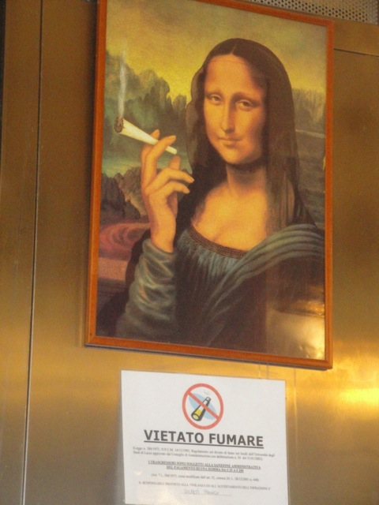
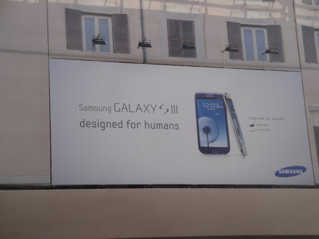

TPR's Mega Europe Trip
Rome
Rome Credit Whoring
Rainbow Magicland Fiabilandia Mirabilandia Movieland Studios Gardaland Walygator Park Holiday Park Europa Park Fort Fun Heide Park Schlossbeck Movie Park Germany Phantasialand Parc Asterix Disneyland Paris
Well, the time has finally come!!! My big trip to Europe is here. This was not only my first real international trip (Canada barely counts!!!), but it was definetly by far the biggest trip I have done. I mean, North of the Border, Middle America, and Northeast were great, amazing, and assloads of fun, but this thing trumped them all. This trip was just f*cking huge and f*cking amazing. And the night before the trip, I prepared with a visit from one of my favorite Mexican Resteraunts. Because nothing says Europe like Mexican Food. =)
I just orgasmed in excitement right now. =)
Quick layover in New York City (Damn. Construction on the New World Trade Center is really going by fast now).
Sorry New York City. I loved seeing you last year and all, but I have better things to do. Tell Scotts Pizza Tours I said Hi though.
Holy Sh*t!!!!! I'm here!!!! =)
Well. Time to take the Metro into Rome.
Hello Rainbow Magicland. I'll see you soon. Yeah, they're advertising the park everywhere in Rome. Its on my metro ticket, and plasted on countless buses in the city.
Cool Italian Graffiti.
Oh, and I ran into this lovely con artist on the Metro. He was just standing there, playing the Accordion. Awesome. Accordion Players are awesome. Cody does in public. Great to see it over here. But then he goes over to me, and DEMANDS that I pay him for the performance. I intially told him "Go Away." "But he just kept pestering me for money until I eventually just cracked and gave him money, and man do I deeply regret it. I really should have just completely ignored or been more hostile and stated "F*ck off!!! I'm not giving you a single Euro you rotten con artist!!!!! Shoo!!! Scram!!! Go away!!!!!" Hold on, let me get Google Translate......Come on!!! Load Dammit!!!!!......Ahh. Here we go. "Affanculo! Non ti sto dando un euro è artista marcio con!! Sciò! Scram! Andate via!!"
Well, here I am in Rome.
Ooh. Funky Looking Bridge.
All right. So its lunch time, and I'm hungry. But I don't have much cash (A reucurring theme on this trip). So I'm trying to find some cheap place for lunch. I keep finding a bunch of places that only serve stuff at around €10. Then I stumble upon this amazing little hole in the wall Pizza Place. It may be the size of a janitors closet and have no name, but the pizza was Scotts Pizza Tour good and I got 3 slices and a Coke for only €3.20!!!!! Awesome!!!!! =)
 I have no idea what this is, but it looks cool.
I have no idea what this is, but it looks cool.
Well, I made it to the Colloseum.
I'll see you in full detail tomorrow Colloseum.
OH THANK GOD!!! A WATER FOUNTAIN!!!!! AFTER WANDERING AROUND ROME FOR HOURS IN 95 DEGREE WEATHER DEHYDRATED, SEEING THIS THING WAS AMAZING!!!!!!
Hey, when you gotta go...
 MINE MINE MINE MINE MINE MINE MINE!!!!!!!!!!!!!!
MINE MINE MINE MINE MINE MINE MINE!!!!!!!!!!!!!!
All right. Italian Gelato is just flat out amazing. I love this stuff. The stuff I had in Solvang last week, crap compared to this. So good!!!!!!
I can see that the Vending Machines in Rome are only of the highest quality and in excellent condition.
Well, I lost my Metro Ticket. So now its time for me to try walking through the city to get back to the hotel. Hey, Challenge Accepted.
Ooh. Pretty Rome Shot.
Blah. I don't need you. I have legs. =p
Hey, I may be completely lost and have no clue where the hell I am, but it does look nice.
Next time I hear anyone bitching about gas prices, I'm just gonna show them this photo.
Hello dog. Hows it going.
Well at this point, I was at the end of my rope as I had officially run out of city to walk in, I was heading for a dead end, I had no idea where to go, and then when I bumped into this really creepy old Italian Old Guy who asked me for sex, I knew I had to get out of there. So I snuck on the Metro and luckily I got off at my stop before the guy could check my ticket.
All right. The official TPR Trip has started and it started out with lunch at Paino Pizza, where we got lots of good pizza, including the super good Four Cheese Pizza.

This picture is awesome on so many different levels, especially with the no smoking rule down below.
I think this was Tiramisu or Creme Brule, I just remember it being really freaking good.
All right. First stop of the day would be the Piazza Navona Square.
This is one of the most famous squares in Rome. Its been around since the 15th Century.
Hey, its a really nice looking square.
"OH NO WILBUR!!!!!!! I'M SINKING!!!!!!"
Up next, we checked out the Pantheon.
Ooh. This place is so fascinating.
"You expect us poor innocent children to climb a dangerous scaffolding and paint naked people all over a church!!!? WE'LL DO IT!!!!!!!"
"But we're not doing it for the sake of art, and we're not doing it for the sake of money!!! No, we're doing it because...we like painting naked people!!!"
 Up next, we checked out the Trevi Fountain. One of the most famous fountains in the world.
Up next, we checked out the Trevi Fountain. One of the most famous fountains in the world.
Screw the fame. We're all just here because its 95 degrees and we can soak our heads here.

The Samsung Galaxy Ad really adds to the ancient feel of this place. =)
Yeah. This place is awesome.
Anyone want a free rose?
Some of the best and most authentic cuisine you can possibly find in Rome. Burger King.
Here are the Spanish Steps. We voted to see them from the bus since its air conditioned, though really, I feel that everyone just didn't want to get any damn exercise. =)
Here are the Roman Forums. Yeah. Its old. I get it. =)
Hey. They may not be the Spanish Steps, but whatever. Close enough.
I'm not sure what building this is, but its near the Roman Forums and it looks nice.
 Mussolini gave some big speech here. Because if theres anyone who did wonders for the world, it was Mussolini. He was such a wonderful man. Such a good guy he was.
Mussolini gave some big speech here. Because if theres anyone who did wonders for the world, it was Mussolini. He was such a wonderful man. Such a good guy he was.
And now we saved the best for last.
Yep. We're gonna see the Colloseum!!!!
And yes, we got to see a full tour of this place!!! =)
Blugh. Religion. =(
Starring up at the Colloseum.
Colloseum Steps > Spanish Steps.
Here's a painting of what the Colloseum was used for before it became a giant decoration/tourist attraction. Awesome. I'd love to have gone to one of these Colloseum parties.
Yes, this indeed, the inside of the Colloseum.
And for a little more history. Before the Romans built the Colloseum, this doucebag built his palace here before the Romans took it, destroyed it, and built the Colloseum.
Yes. It is indeed more of the inside of the Colloseum.
 We're here at the Vatican City. I now have the urge to just sit down in St. Peters Square, get some Italian Gelato, and eat it while reading a book by Richard Dawkins or Christopher Hitchens.
We're here at the Vatican City. I now have the urge to just sit down in St. Peters Square, get some Italian Gelato, and eat it while reading a book by Richard Dawkins or Christopher Hitchens.
Quick!!! To the car!!!! Before the Pope sentences us all to hell!!!!
Ooh. Pretty shot of Rome from the hillside.
All right. Time for some more Italian Gelato.
This stuff is f*cking amazing.
Rome Credit Whoring
Home